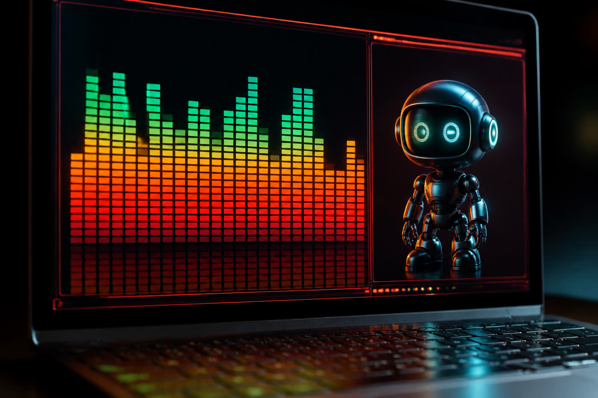
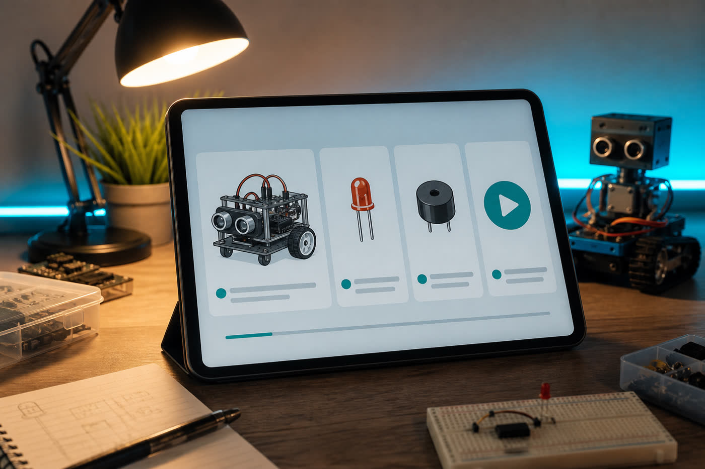
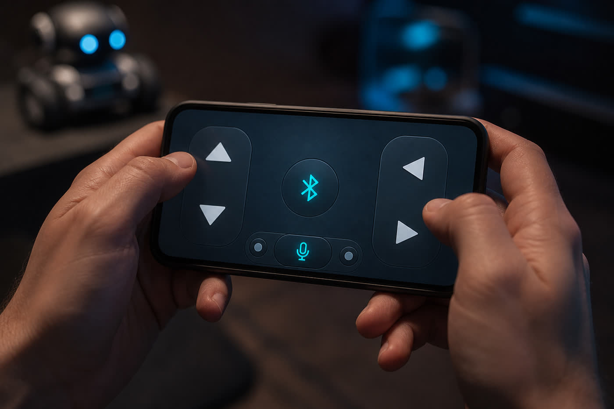
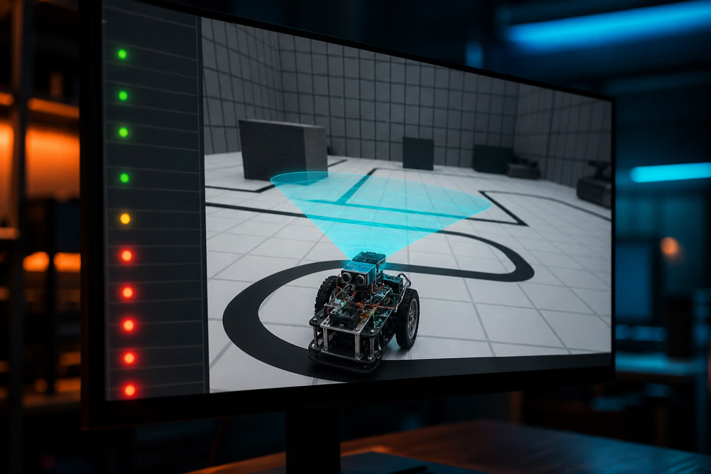
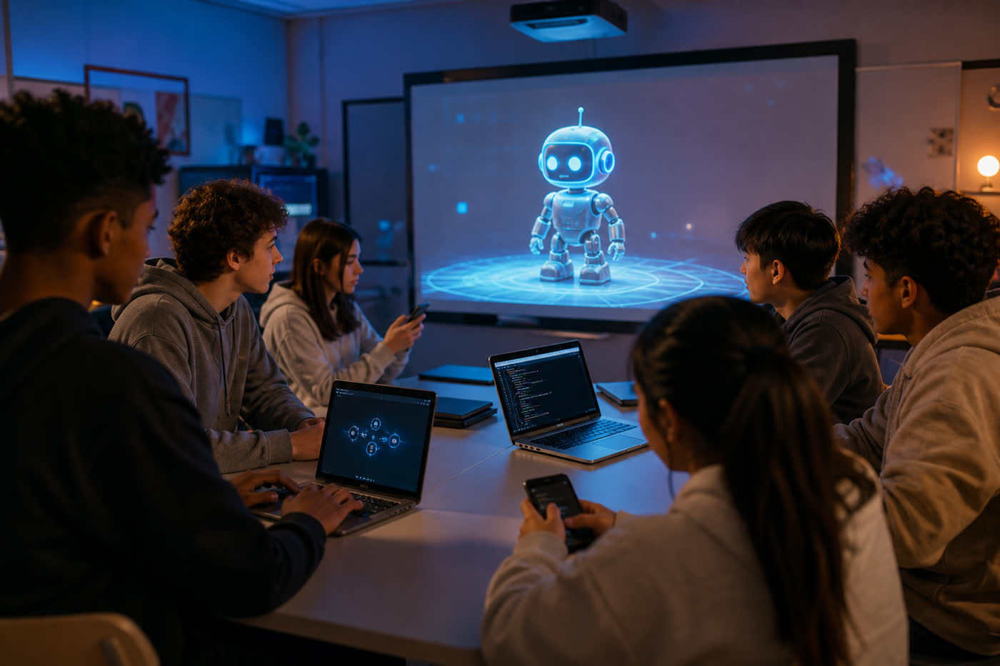

Mini robot con luces al ritmo de la música (Carl-18)
Vúmetro: los LEDs brillan según el volumen de la música. La señal de audio se convierte en nivel de luz. Jhon, este es el efecto que vas a simular en tu laboratorio virtual.
Tu academia de mini robot: luces al ritmo, sonido y ESP32. Solo computadora y celular.
Contraseña del estudiante: 1564
Pediste algo simple para principiantes: un mini robot con luces y sonido, todos los básicos. Aquí no hay taller físico. Vas a ver dos videos, jugar con un vúmetro virtual creado para ti, responder 10 preguntas y elegir un proyecto que vive en la web o el celular.
El primero es un vúmetro: los LEDs brillan con el volumen de la música. El segundo es un top 5 de robots ESP32 para quien recién empieza: Bluetooth integrado (sin HC-05), L298N, powerbank, voz, seguidor de línea y ultrasónico.
Sin kit físico. Este laboratorio vive en la computadora o el celular: 12 barras LED reaccionan al ritmo, como el vúmetro de Carl-18. Elige Beat (pulso constante), Clap (un pico de volumen) o Silence. La carita del mini robot de Jhon parpadea en cian cuando hay sonido.
Un vúmetro convierte la señal de audio en brillo. Más música = más LEDs encendidos. Eso es exactamente lo que viste en Carl-18.
Un micrófono o la salida de audio alimenta el circuito. Aquí lo simulamos con Beat, Clap y Silence, para que Jhon practique sin soldar.
El ESP32 trae Bluetooth integrado: no necesitas el módulo HC-05. Se programa con Arduino IDE y se alimenta con un powerbank de celular. El L298N mueve los motores.
Desde el celular mandas flechas o voz (adelante, atrás, izquierda, derecha, detener). El hardware es el mismo; solo cambia la app. Todo esto Jhon puede enseñarlo en un simulador web.
Diez preguntas basadas solo en los dos videos. Elige una opción. Al enviar se califica solo (verde / rojo) y se desbloquean tus 5 proyectos.
Todo se hace con computadora o celular. Nada de robot físico ni taller. Cada uno lleva el nombre de Jhon Michael Machaca Chambi y puede volverse un ingreso o un impacto social. Elige uno.

Jhon crea un vúmetro web y un robot virtual que reacciona a la música, como Carl-18 pero en el navegador. Freemium para colegios: versión gratis + plan de aula.

Curso para principiantes: LED, buzzer, ESP32, Bluetooth integrado y control por voz. Licencias a colegios que no tienen taller físico. Se programa en Arduino IDE, como en el video.

App con flechas y micrófono que controla un robot VIRTUAL (adelante, atrás, izquierda, derecha, detener). Inspirada en 32 BT Control de MIT App Inventor. El hardware no cambia: solo la app.

Simulador web de seguidor de línea (TCRT5000 a 3–5 mm, LED on = blanco / off = negro) y ultrasónico (5 V vs 3.3 V del ESP32, divisor en el pin echo). Talleres virtuales para escuelas rurales.

Plataforma de lecciones y simuladores para aulas que no tienen kit. Gratis primero para la comunidad de Jhon Michael Machaca Chambi; después un plan municipal.